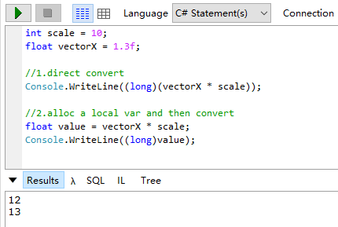
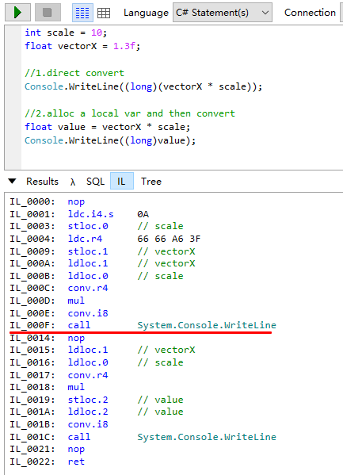
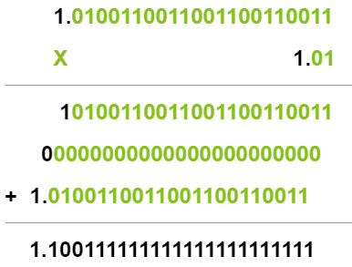
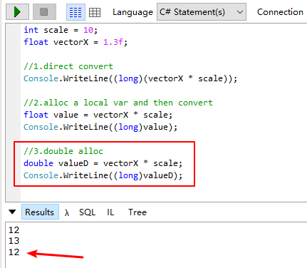

一、问题
最近工作中遇到一个C#单精度浮点数丢精度的问题，直接上发生问题的代码：

第一种写法发生了严重的精度丢失，但其实不是全部的数都会发生这个问题，所以平时开发时并没有发现。要理解造成这个现象的原因，需要从浮点数的运算和存储的基础知识出发去追溯。
二、运算
首先，我们看下这段代码的IL，搞清楚CPU处理这段逻辑大概做了什么操作：

第一种写法，vectorX和scale加载到寄存器后，执行的第一个操作是conv.r4，也就是将int32类型的scale转换为了float。然后再执行乘法，紧接着将结果强转int64，最后输出。从IL看没有什么问题，下面我们按照IL的步骤手动运算一下。
1、得到两个变量在机器中的真实值
整个问题运算的核心是1.3f和10.0f这两个单精度浮点数运算：
十进制数1.3转换为二进制数为\(1.01001100110011..._{(2)}\)
由浮点数存储规则：V = \((-1)^S\) x M x \(2^E\)
- 符号位S，因为是正数，所以为0
- 阶数E = $log_2$1 = 0，float的偏置量bias是\(2^k\) - 1 = \(2^8 - 1\) = 127，所以exponent = E + bias = 127，得到8位阶码01111111
- fraction直接等于二进制小数位，由于float的尾数位有23个，所以保留前23，得到尾数二进制01001100110011001100110
拼起来就是如下：
00111111 10100110 01100110 01100110
我们再从这个值推算阶数E和fraction（这里需要注意：这个二进制值不是由E和fraction计算得到的吗，什么又要推算回去？答：因为在计算实际的存储中，fraction由于只有23位，可能发生截断，如果截断后最低位是1，那么还会发生进位舍入，导致机器存储的实际值和数学意义上的值不一致）
E = \(2^6\) + \(2^5\) + \(2^4\) + \(2^3\) + \(2^2\) + \(2^1\) - 127 = 0 fraction = 0.01001100110011001100110 M = 1 + fraction = 1.01001100110011001100110 = 1.0100110011001100110011（最低位的0对于数学计算来说没有用，可以忽略）
所以1.3可以表示为：\((-1)^S\) x M x \(2^E\) = \(2^0\) x \(1.0100110011001100110011_{(2)}\)
同理，10.0表示为：\(2^3\) x \(1.01_{(2)}\)
2、二进制乘法
由上面得到的机器值结果：
1.3 x 10.0 = \(2^0\) x \(1.0100110011001100110011_{(2)}\) x \(2^3\) x \(1.01_{(2)}\) = \(2^3\) x \(1.0100110011001100110011_{(2)}\) x \(1.01_{(2)}\)
\(1.0100110011001100110011_{(2)}\) x \(1.01_{(2)}\)的二进制乘法结果如下：

取小数点后23位10011111111111111111111
所以最终，ALU计算得到的值是\(2^3\) x \(1.10011111111111111111111_{(2)}\)
三、存储
ALU已经得到了值\(2^3\) x \(1.10011111111111111111111_{(2)}\)
E = 3，所以exponent = 3 + 127 = 130，阶码为1000001 0
整个结果表示为： 01000001 01001111 11111111 11111111
在现代CPU架构中，乘法和除法乘法和除法运算是使用两个累加器（主累加器 EAX 与从累加器 EDX）进行临时存储（例如，MUL ECX 将把两个 32 位寄存器 ECX 与 EAX 相乘，64 位结果放入 EAX 与 EDX）
所以，累加器中的二进制值如下：
EAX：
01000001 01001111 11111111 11111111
EDX：
00000000 00000000 00000000 00000000
这里存储的实际值是12.99999904632568359375 接下来的处理是关键的地方，这个值被不同类型的变量去存，会有不同的二进制表现：
1、存储在float中
EAX中的32位值会被加载给栈上float变量的32位，这里由于最低位是1，会发生进位舍入，所以float变量的存储是： ### 01000001 01010000 00000000 00000000 这个值是最终程序用到的值：\(2^3\) x (1 + \(2^{-1}\) + \(2^{-3}\)) = 8 * 1.625 = 13 这也是为什么第二种写法得到正确结果的原因，12.99999904632568359375先存入float变量，发生了进位舍入变为了13，再强转long时，小数截断完仍然是13
2、存储在int或者long中
浮点数转整型，会直接发生小数截断，也就是直接舍弃所有小数点后的值，12.99999904632568359375直接截断为12，这也是第一种写法发生精度丢失的原因
3、存储在double中
由于double和float的阶码位和尾数位不一样，所以8位的阶码会重新计算成11位阶码，然后23位fraction会存储在52位fraction中，不足的低位用0布满，所以double变量的存储是这样： ### 01000000 00101001 11111111 11111111 ### 11111100 00000000 00000000 00000000 这个值是：12.99999988079071044921875
所以理论上，如果我们在强转long之前不是用float去存而是用double存，也会被截断为12，我们验证下：

需要注意的是，第一种写法和第三种写法导致精度丢失的原因并不一样。第一种是因为累加器的值直接截断了；第三种是因为double存储，没有发生进位，同时也被截断了。
四、总结
个人认为，其实从浮点数的设计来看，精度丢失无法避免。如果程序对精度有要求，最好是通过整型存储一个放大的值来处理。
如果无法使用整型来处理，尽量选择float，虽然也无法完全准确地表述一个真实值，但是对于强转整型发生时来说，float的表现更好，因为进位舍入能一定程度上中和掉小数截断导致的严重精度丢失，double存储位太多了，通常更容易形成一个我们不期望的近似值。
最后，如果精度要求过高，float无法完成任务，这时还是选择使用double